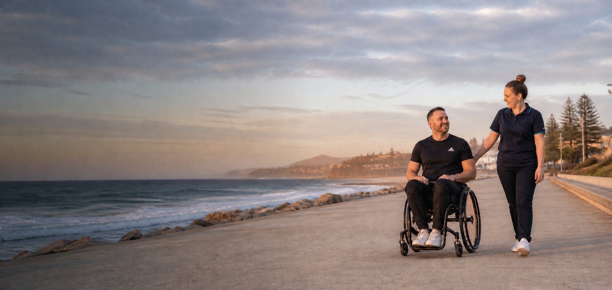

Big decisions
Approximately $16,000 saved on a car purchase
We helped research vehicles, compare options and negotiate a better deal for a client, saving approximately $16,000 in that particular purchase.
Practical research & admin →Real support • Real possibilities
From practical problem-solving to great days outdoors, our team looks beyond a checklist and focuses on what matters to each person.
Talk to Compass
What we've helped with
Examples of real support activities, shared without identifying individual clients. Every plan and outcome is different.
Big decisions
We helped research vehicles, compare options and negotiate a better deal for a client, saving approximately $16,000 in that particular purchase.
Practical research & admin →Getting outdoors
Getting out on the water, enjoying nature, walking with a dog, visiting parks and discovering new places at a comfortable pace.
Community participation →Experiences & travel
Planning outings, scenic drives, social experiences, travel logistics and the practical details that make a good day possible.
Travel support →Life admin
Helping people compare choices, coordinate appointments, manage paperwork, run errands and stay on top of everyday responsibilities.
Admin & planning →Settling in
Helping organise services, prepare the home, coordinate practical tasks and settle into a new environment.
Moving support →Staying active
Support to attend the gym, try new activities, build routines and enjoy more independent participation.
Fitness support →These are examples of support activities, not guaranteed outcomes. Any support funded through a plan must be appropriate to the individual and confirmed under their arrangements.
Tell Compass what you'd like to achieve — we'll help you explore a practical next step.
Start a conversation